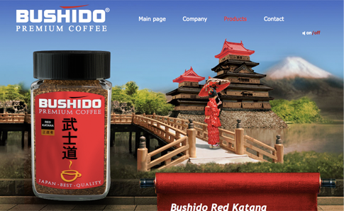
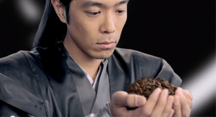
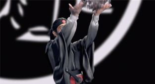
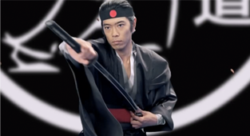
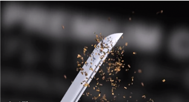
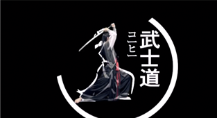
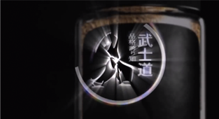
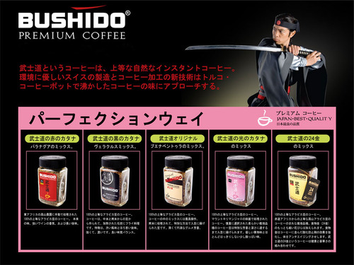

武士道コーヒー!
ロシアから武士道のインスタントコーヒーがエントリーだ

CM も演舞風でカッコイイ!
 
サムライが、コーヒー豆を高く投げると...
 
刀を抜きざま、コーヒーをクラッシュしていく! イアイド!!
 
そして、サムライのファイティングポーズが、そのままロゴマークに変化していく 「コ|ヒ| 武士道」「品格誇り知」のキャッチコピーがキラリと光る
オフィシャルサイトには、日本語ページもある

いい加減な日本語がとても良い
ちなみに、会社情報によると、全てのコーヒーは.. スイス製 だ!! (日本関係ない!!)
BUSHIDO combines Eastern philosophy and wisdom with European coffee culture, innovative achievements and the highest quality of Swiss coffee art.
Coffee BUSHIDO is fully produced in Switzerland
BUSHIDOは、ヨーロッパのコーヒー文化、革新的な業績およびスイスのコーヒー芸術の最高品質と東洋の哲学および知恵を組み合わせます。
BUSHIDOは、全てスイスで生産されます